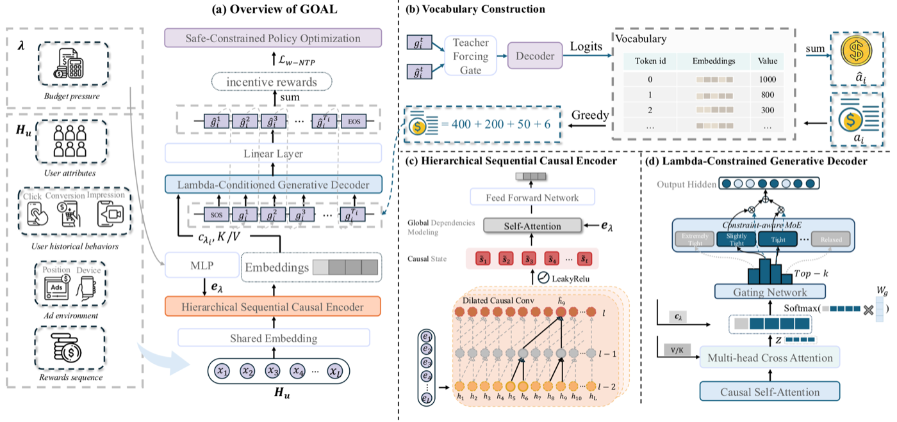
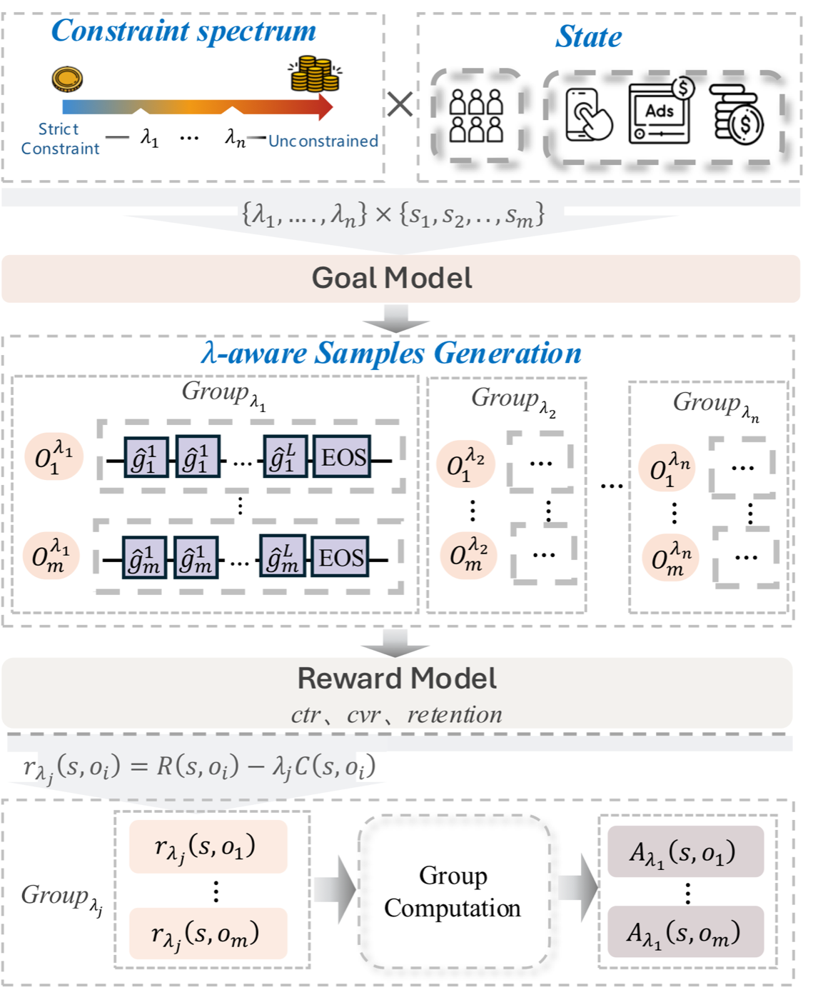
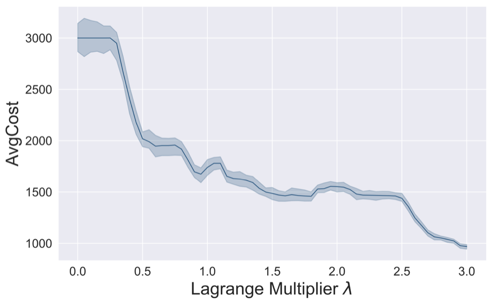
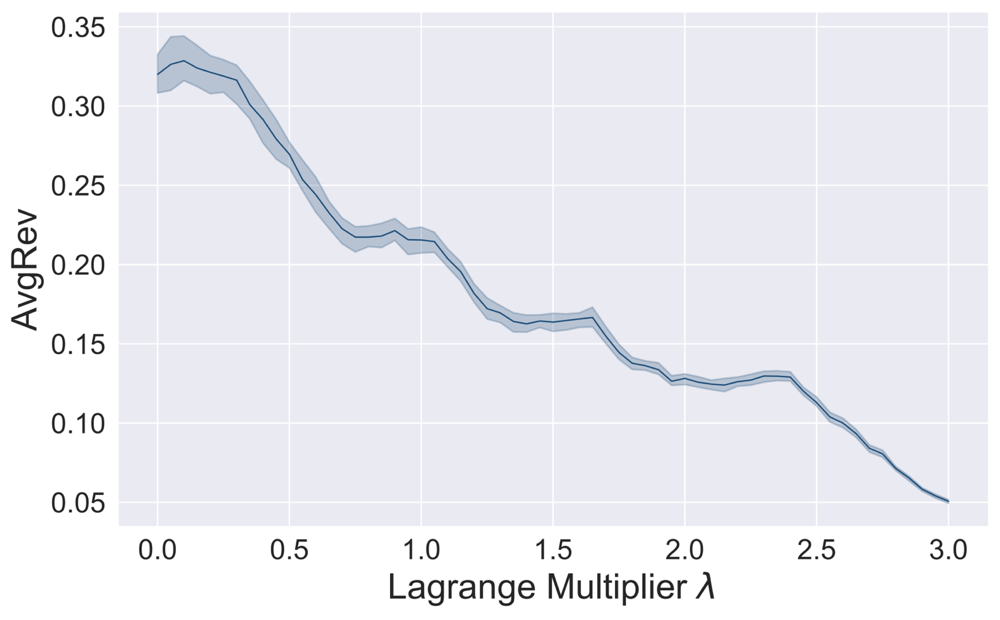
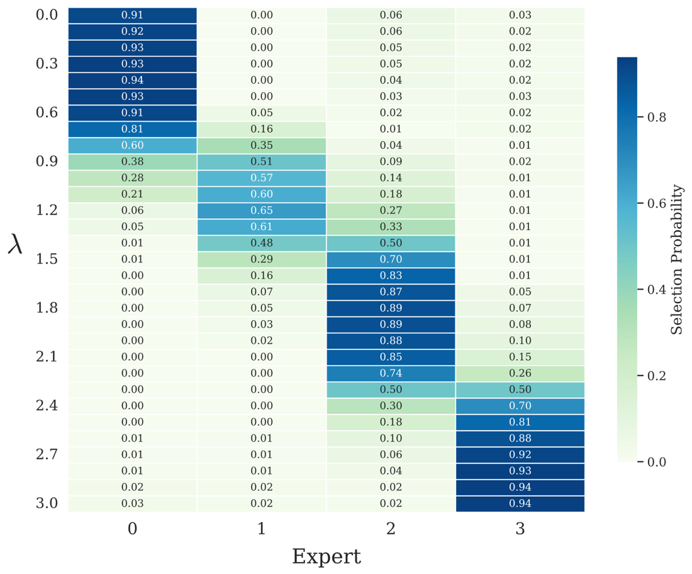

- 違反率 12.24%IA データで、実現した ROI が目標を下回ったスライディングウィンドウの割合（RVR）。比較手法で最も低い CDT は 15.00% だった（Table 1）。
- 一つのモデルで \(\lambda\) を変える学習時に \(\lambda\) を区間から抜き出して条件に入れる。運用時は目標の ROI を満たす \(\lambda^\ast\) を二分探索で選んで入力するだけで、再学習はしない。
- 収益 +2.559%4 週間のオンライン A/B テストで、本番の基準方策と比べた収益の伸び。ROI は +2.184% で、\(p = 0.03\) と報告されている。
インセンティブ広告では、操作ごとに配るコインの額を決め、期間全体の ROI の下限を守る必要がある
インセンティブ広告は仮想コインやクーポンといった報酬を配って、ユーザーに広告を見る、アプリを入れるといった行動を促す仕組みである。どの広告を出すかに加えて、1 回ごとにいくら配るかを決めなければならない。配りすぎると短期の反応は増えても長期の収益性が損なわれ、控えすぎると参加が続かない。
論文は既存の方法の限界を次のように整理している。アップリフトモデリングは短期の処置効果を見るもので、効果を予測してから配り方を決める二段階の構成のため、予測の誤差に左右されやすく、制約のもとで最適でない決定になる。オフライン強化学習は長期の目的を扱えるが、頻繁なやり取りでは成り立たないマルコフ性を仮定し、分布シフトのために方策が保守的になりやすい。生成モデルで行動を直接出す方法にも問題があり、長い履歴全体に自己注意をかけると、急な疲労のような短い期間に現れる信号の重みが小さくなってしまう。言語モデルの整合（アライメント）の手法は制約のないスカラー報酬を最大化するもので、時間をまたぐ制約を扱えない。
ROI の下限をラグランジュ双対で線形化すると、価格 λ のもとで「収益 − λ × 費用」の和を最大にする問題になる
\(N\) 回のやり取りで、行動 \(a_i\)（配るコインの額）が費用 \(c_i\) と収益 \(r_i\) を生むとする。期間全体の ROI \(\sum_i r_i / \sum_i c_i\) をしきい値 \(\tau\) 以上に保ちながら、収益の和を最大にしたい。
比の形の制約は全期間の決定を結びつけるので、そのままでは解きにくい。制約を \(\sum r_i - \tau\sum c_i \ge 0\) と線形化して乗数 \(\lambda' \ge 0\) を掛けると、目的は次の形にまとまる。
\(\lambda\) は費用 1 単位あたりの価格として働く。\(\lambda = 0\) なら収益だけを最大にし、\(\lambda\) が大きいほど費用を抑える。\(\lambda'\to\infty\) で \(\lambda\) は \(\tau\) に近づく。論文は、実行可能な方策があれば強双対性が成り立つとして、最適な \(\lambda^\ast\) を与えれば各回の「収益 − \(\lambda^\ast\) × 費用」の和を最大にすればよいとしている。
学習データはユーザーごとの決定時点 \(t\) について、長さ \(L\) の履歴 \(\mathcal H = [\mathbf x_{t-L},\dots,\mathbf x_{t-1}]\)（各 \(\mathbf x_\tau\) は状態の特徴と、そのとき配った額の組）、その時点の \(\lambda\)、実際に配った額 \(a\) の組である。生成方策 \(\pi_\theta\) は \((\mathcal H, \lambda)\) を受け取って額を出す。
コインの額を大きい単位から順に並べたトークン列に分け、上位の桁から自己回帰で生成する
配る額は 1〜3,000 コインと幅が広く、分布の裾も重い。論文によれば、1 回の回帰で額を当てようとすると、件数の多い少額のサンプルに学習が偏り、まれだが重要な高額の判断を学びきれない。そこで額を離散のトークンの和で表す。
- 語彙の作り方 額のデータを大きい順に並べ、分位点の値をトークンにして、その値以上の額から差し引く。分位点を減衰率 \(\delta\) で下げながらこれを繰り返し、復元誤差がしきい値 \(\epsilon_1\) 以下になるか、トークンの値が最小精度 \(\epsilon_2\) を下回ったら止める（Algorithm 1）。
- 額の分け方 残りの額以下で最大のトークンを順に選ぶ貪欲法で、額をトークン列 \((g^1,\dots,g^T)\) に分ける。トークンの値は \(\phi(g^1)\ge\phi(g^2)\ge\cdots\) と単調に小さくなり、先頭が大きさのおおよそを、後ろが端数を受け持つ。論文の図の例では 656 = 400 + 200 + 50 + 6 となる。
- 重みつきの次トークン予測 先頭のトークンを誤ると額が大きくずれるので、トークンの値 \(v\) に応じた重み \(\omega_t = \log_{10}(v(g_t)+1) + \delta\) を掛けた交差エントロピーで学習する（教師強制を使う）。生成時は各ステップで確率が最大のトークンを選び、値を足し合わせて額に戻す。
拡張因果畳み込みで直近の行動の変化をとらえ、λ を条件にした MoE デコーダで配り方を切り替える
階層的な因果エンコーダ 履歴の埋め込みに、まず拡張因果畳み込み（dilated causal convolution、DCC）をかける。各時点の表現は過去の時点だけから作られる。その出力の先頭に、\(\lambda\) を MLP で埋め込んだ制約トークン \(\mathbf e_\lambda\) を付け、自己注意と FFN で履歴全体の長い依存関係をとらえる。局所の変化を先に畳み込みで拾っておくことで、急な疲労や意図の変化が自己注意で薄まるのを防ぐ、というのが論文の主張である。
\(\lambda\) を条件にしたデコーダ デコーダの FFN を Mixture-of-Experts（MoE）に置き換え、ゲートには中間表現と制約の埋め込み \(\mathbf c_\lambda\) を連結して入れる。上位 \(k\) 個の専門家の出力を重みつきで足し、語彙上の確率に変換して次のトークンを出す。
報酬モデル 最終的なコンバージョンはまれなので、費用だけを報酬にすると学習が不安定になる。そこで収益への寄与、スクロールの深さ、継続、タスクへの参加といった補助的な行動の信号を、マルチタワーのモデルで一つの嗜好スコア（P-Score）にまとめ、これを後段の報酬 \(R\) に使う。

λ を変えながら一つの方策を学び、報酬を λ ごとに標準化することで、制約の強さを再学習なしに変えられる
ふつうの主双対法は \(\lambda\) を反復して更新するので、ROI のしきい値が変わるたびに方策を学び直すことになる。大きな生成モデルでは、この学び直しは計算の負担が大きすぎる。論文は \(\lambda\) を状態に加えた方策 \(\pi_\theta(a\mid s,\lambda)\) を、\(\lambda\) の分布の上で一度に学ぶ（BCORLE の \(\lambda\) 汎化の考え方を GRPO と組み合わせたもの）。
\(R\) は P-Score、\(C\) は行動の金銭的な費用である。\(\lambda\) の候補は 0 から \(\lambda_{\max}\) までを等間隔に区切った集合で、付録の例では \(\lambda_{\max} = 3.0\)、刻み 0.5 の 7 通りである。上限には想定する ROI 目標の最大値 \(\tau_{\max}\) を使う。
状態の集合と \(\lambda\) の候補の直積を作り、それぞれについて \(m\) 個の候補の応答（トークン列）を生成して報酬を計算する。\(\lambda\) が大きいほど報酬全体が小さくなるので、全体で標準化すると、制約がきつい条件の応答が方策の質と無関係に悪く見えてしまう。そこで同じ \(\lambda_j\) の \(m\) 個の中だけで平均 \(\mu_{\lambda_j}\) と標準偏差 \(\sigma_{\lambda_j}\) をとり、優位度を \(A = (r_{\lambda_j} - \mu_{\lambda_j}) / (\sigma_{\lambda_j}+\epsilon)\) とする。方策の更新は PPO 型のクリップと参照方策への KL 正則化を使う、GRPO と同じ形である。
運用時は検証用データで方策を動かして実現した ROI を計算し、目標 \(\tau\) を満たす \(\lambda\) を候補の中から二分探索で選ぶ（Algorithm 2）。ROI が \(\lambda\) について単調であることを前提にしている。

短尺動画プラットフォームのインセンティブ広告のログと、疲労を組み込んだ合成環境で、5 つの手法と比べた
- IA 大手の短尺動画プラットフォームのインセンティブ広告システムで、2025 年 11 月 5 日〜12 日に集めたデータ。1 日あたり約 13 万人のアクティブユーザーと 184 万件のインセンティブの露出を含む。最初の 6 日を学習、最後の 1 日をテストに使う。
- Synthetic IA IA の特徴にそろえて作ったシミュレータに、明示的な疲労の動きを入れたもの。疲労は \(f_{t+1} = \rho f_t + \eta a_t\) で積み上がって減衰し、反応の確率は \(\sigma(\alpha a_t - \beta f_t)\) になる。貪欲、ランダム、中程度で固定の 3 種類を混ぜた行動方策で 1 万本の軌跡を作る（\(K = 10\)、\(T = 100\)、\(\alpha = 0.8\)、\(\beta = 1.2\)、\(\rho = 0.9\)、\(\eta = 0.5\)）。
- 指標 平均収益 REV（USD）、ROI（総収益 ÷ 総インセンティブ費用）、論文が新たに提案する ROI 違反率 RVR（実現した ROI が目標を下回ったスライディングウィンドウの割合で、小さいほどよい）。
- 比較手法 系列生成の DT と、コストのしきい値を条件にする CDT、制約のないオフライン強化学習の IQL、制約つき強化学習の CAL と TREBI。GOAL は \(\lambda = 0.5\) で比べている。
このページの数値は arXiv v1（2026 年 8 月 5 日）の LaTeX ソースの本文と表による。ソースには KDD '26 の会議録の書誌情報（DOI 10.1145/3770855.3818423）が入っているが、ACM Digital Library の会議録版（pp. 7070–7081）は自動では取得できなかったため、照合していない。
IA データでは収益、ROI、違反率のすべてで最もよく、合成環境では収益で CDT に次いだ
IA データで、GOAL の平均収益は 0.32 で、2 番目の DT（0.27）より 18.52% 高かった。ROI は 4.93（DT は 4.74）、RVR は 12.24%（CDT は 15.00%）で、どちらも最もよかった。疲労を入れた合成環境では、ROI 4.23 と RVR 9.20% は最もよかったが、平均収益は 0.29 で、CDT の 0.36 を下回った。
論文はここから、生成系の手法（DT、CDT、GOAL）が MDP にもとづく強化学習の手法を総じて上回ったこと、制約を条件として明示的に入れる生成のほうが、後から制約をかける最適化より有効であることを読み取っている。
| IA | Synthetic IA | |||||
|---|---|---|---|---|---|---|
| 手法 | REV ↑ | ROI ↑ | RVR ↓ | REV ↑ | ROI ↑ | RVR ↓ |
| DT | 0.27 | 4.74 | 18.23% | 0.19 | 3.64 | 13.51% |
| CDT | 0.22 | 4.60 | 15.00% | 0.36 | 4.12 | 10.24% |
| IQL | 0.25 | 3.68 | 24.69% | 0.15 | 3.59 | 18.05% |
| CAL | 0.19 | 3.70 | 21.82% | 0.12 | 3.61 | 14.49% |
| TREBI | 0.19 | 3.92 | 20.21% | 0.09 | 3.72 | 14.21% |
| GOAL（提案） | 0.32 | 4.93 | 12.24% | 0.29 | 4.23 | 9.20% |
表1 論文 Table 1 の値（下線は各列で最もよい値）。論文の表の「Improv.」行では、合成環境の ROI が +2.40%、RVR が +9.86% となっているが、表の値から計算すると、2 番目の CDT に対してそれぞれ約 2.7%、約 10.2% になる。
λ を上げると平均費用と平均収益がともに下がり、ゲートが選ぶ専門家も λ に応じて入れ替わった
学習済みのモデルに入れる \(\lambda\) をテストデータの上で動かすと、\(\lambda\) が大きいほど 1 回あたりの平均費用が下がり、平均収益も下がった（図3）。\(\lambda\) が小さいうちは大きな額を配って反応を引き出し、\(\lambda\) が大きくなると効率の低いやり取りへの額を選んで減らす。論文はこれを、運用時に \(\lambda\) を変えるだけで、再学習せずに方策を積極的な配り方から保守的な配り方まで滑らかに調整できることを示す結果としている。


図3 \(\lambda\) と平均インセンティブ費用（左）、平均収益（右）（論文 Fig. 4）。本文は費用が単調に下がると述べているが、図の曲線には局所的に上がる区間もある。
付録では、MoE のゲートが各専門家を選ぶ平均確率を \(\lambda\) ごとに示している（図4）。\(\lambda\) が小さいとき（ROI 制約が緩いとき）は専門家 0 がほとんど選ばれ、\(\lambda\) が上がるにつれて選ばれる専門家が 1、2 へ移り、\(\lambda\) が大きい領域ではほぼ専門家 3 に集中する。専門家はすべて同じ構造で一緒に学習しており、この分担は人が割り当てたものではないと論文は述べている。

どの部品を外しても収益が下がり、4 週間のオンライン A/B テストでは ROI が 2.184%、収益が 2.559% 上がった
IA データで部品を一つずつ外した（ROI の目標 \(\tau = 3.0\)）。SCPO の段階を外して教師あり学習だけのモデルを使うと、ROI が 4.57 に下がり、RVR が 15.64% に上がった。DCC を外して自己注意だけにすると、平均収益が 0.25 に下がった。\(\lambda\) を固定して SCPO をかけると、ROI は高いが平均収益は 0.25 にとどまり、論文はこれを、固定の \(\lambda\) では変わるシステムの状態に合わせられないためと解釈している。トークン化をやめて額を直接回帰すると、平均収益 0.29、ROI 4.89 に下がった。
| 手法 | REV ↑ | ROI ↑ | RVR ↓ |
|---|---|---|---|
| w/o SCPO（教師あり学習のみ） | 0.27 ± 0.01 | 4.57 ± 0.04 | 15.64% ± 0.02 |
| w/o DCC（自己注意のみ） | 0.25 ± 0.01 | 4.91 ± 0.05 | 12.29% ± 0.02 |
| SCPO w/o \(\lambda\)-gen（\(\lambda\) を固定） | 0.25 ± 0.03 | 4.89 ± 0.02 | 14.12% ± 0.04 |
| w/o Tokenizer（直接回帰） | 0.29 ± 0.02 | 4.89 ± 0.03 | 13.85% ± 0.03 |
| GOAL（提案） | 0.32 ± 0.01 | 4.93 ± 0.02 | 12.24% ± 0.01 |
表2 論文 Table 2 の値。表中の ± の意味（標準偏差か、何回の試行か）は本文に書かれていない。GOAL の行は Table 1 の IA の値（\(\lambda = 0.5\) で比較）と同じである。
オンラインではインセンティブ広告システムで 4 週間の A/B テストを行った。論文には「各実験群がランダムに選んだユーザーの 65% を含む」とある。本番の基準方策と比べて、GOAL は ROI を 2.184%、収益を 2.559% 伸ばし、\(p = 0.03\) で有意だったと報告している。滞在時間や DAU といった副次的な指標には、有意な悪化は見られなかったという。
ROI の下限を価格 λ で「収益 − λ × 費用」に置き換え、λ を入力にとる一つの生成方策で、毎回配る額を連続的に決める
- 推定するもの 処置効果は推定しない。履歴と \(\lambda\) から配る額を直接生成する方策を学ぶ。報酬には複数の行動の信号をまとめた P-Score \(R\) を使う。
- コストの扱い 配ったコインの金銭的な費用 \(C\)。報酬から \(\lambda C\) を差し引く形で目的に入る。
- 処置の種類 連続量（1〜3,000 コインの額）。語彙のトークンの和で表し、トークン列として生成する。
- 予算制約 総額の上限ではなく、期間全体の ROI の下限 \(\tau\)。ラグランジュ緩和で \(\lambda\) に置き換え、運用時は検証データで ROI が \(\tau\) 以上になる \(\lambda^\ast\) を二分探索で選ぶ。評価では、ROI が目標を下回ったウィンドウの割合（RVR）で制約の守り具合を測る。
- データ 本番のログ（オフライン）で教師あり学習をしてから、報酬モデルを使って SCPO で方策を更新する。オンラインの A/B テストも行っている。
ROI 順の割当てとの関係を補足しておく（解説者の注）。固定した \(\lambda\) のもとで各回の \(r - \lambda c\) を最大にするのは、ROI の制約をラグランジュ緩和したときの最適行動で、配るか配らないかの二択なら、増える収益と費用の比がしきい値を超える相手に配ることにあたる。この論文はその最適行動を表で引くのではなく、\(\lambda\) を入力にとる生成モデルとして学び、額の選択肢を連続量に広げている。また、ここでの \(r\) は対照と比べた上乗せ分ではなく、報酬モデルの出力そのものである。論文自身は予算制約つきのクーポン配分（GMV を固定予算のもとで最大にする問題）を、ROI 制約のもとで収益を最大にする自分たちの問題とは別のものとして関連研究に挙げている。
@inproceedings{chen2026generative,
title = {Generative Optimization for Incentivized Advertising with Global Level Constraints},
author = {Chen, Gege and Luo, Ning and Jiang, Hao and Li, Da and Shu, Wenzheng and Sha, Teng and Zeng, Yanxiang and Tai, Wenxin and Zhou, Fan and Liu, Xialong},
booktitle = {Proceedings of the 32nd ACM SIGKDD Conference on Knowledge Discovery and Data Mining V.2},
pages = {7070--7081},
year = {2026},
publisher = {ACM},
doi = {10.1145/3770855.3818423},
eprint = {2608.04421},
archivePrefix = {arXiv}
}